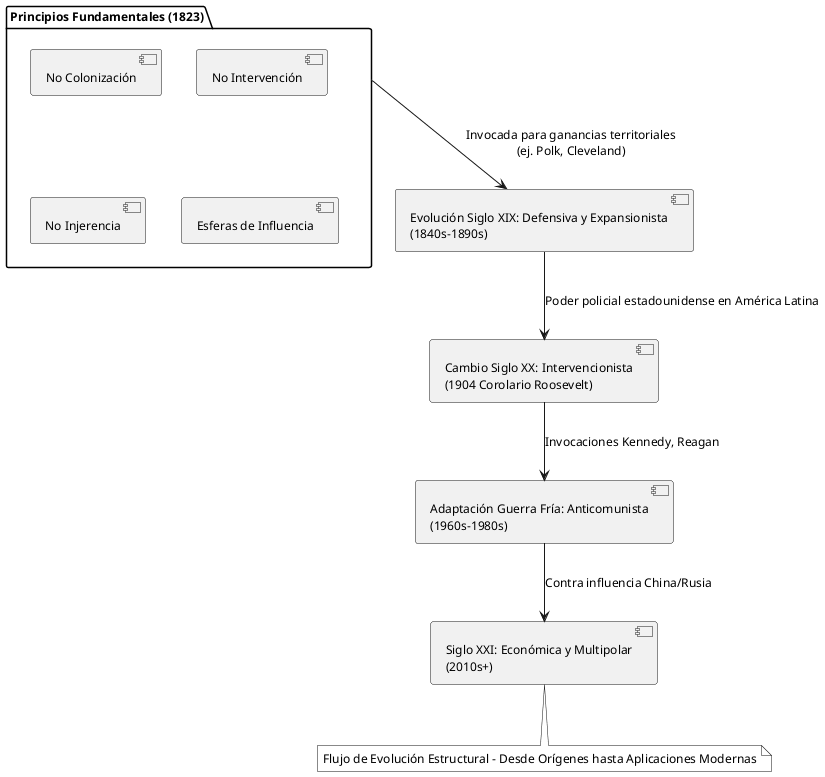

La Doctrina Monroe: Un Examen Detallado, Analítico y Crítico
La Doctrina Monroe: Un Examen Detallado, Analítico y Crítico
Introducción
La Doctrina Monroe, articulada por primera vez por el presidente James Monroe en su mensaje anual al Congreso el 2 de diciembre de 1823, constituye uno de los pilares fundamentales de la política exterior estadounidense. Redactada principalmente por el secretario de Estado John Quincy Adams, declaró el Hemisferio Occidental cerrado a nuevas colonizaciones e intervenciones europeas, al tiempo que comprometía a EE.UU. a no interferir en los asuntos europeos. Esta doctrina surgió en el contexto de la Europa posnapoleónica y la ola de movimientos independentistas latinoamericanos, con el objetivo de proteger a las nuevas repúblicas de posibles reconquistas.
A lo largo de dos siglos, la Doctrina ha evolucionado desde una declaración defensiva —apoyada implícitamente por el poder naval británico— hasta una justificación para la dominación hemisférica estadounidense y sus intervenciones. Este análisis examina su desarrollo histórico, fundamentos analíticos, defectos críticos y sus impactos duraderos en la política global, las estrategias de defensa y la seguridad internacional.
Contexto histórico y orígenes
El siglo XIX temprano estuvo marcado por el declive del dominio colonial español en América Latina, con revoluciones lideradas por figuras como Simón Bolívar y José de San Martín que lograron la independencia de numerosas naciones entre 1810 y 1825. Al mismo tiempo, la Santa Alianza (Rusia, Austria, Prusia) buscaba restaurar monarquías en Europa y potencialmente ayudar a España a reconquistar sus colonias.
EE.UU., tras haber expandido su territorio mediante la Compra de Luisiana (1803) y el Tratado Adams-Onís (1819), temía el avance europeo que pudiera amenazar su seguridad e intereses económicos. Gran Bretaña, compartiendo sentimientos anticoloniales para proteger sus rutas comerciales, propuso una declaración conjunta, pero Adams abogó por una declaración unilateral estadounidense para afirmar independencia y evitar compromisos.
En su discurso, Monroe advirtió que cualquier intento europeo de extender su sistema político al continente americano sería considerado “peligroso para nuestra paz y seguridad”, estableciendo esferas de influencia: el Viejo Mundo para Europa y el Nuevo Mundo para las Américas.
Cronología de la Doctrina Monroe
- 1823: El presidente James Monroe anuncia la Doctrina en su mensaje al Congreso.
- 1824-1825: Rusia acepta limitar sus reclamaciones en Norteamérica; Gran Bretaña ofrece apoyo tácito mediante disuasión naval.
- 1845: El presidente James Polk invoca la Doctrina para justificar la anexión de Texas y el acuerdo sobre Oregón.
- 1846-1848: Guerra México-Estados Unidos; la Doctrina se utiliza para enmarcar la expansión estadounidense como defensiva frente a influencia europea.
- 1861-1865: Guerra Civil estadounidense; Francia interviene en México (violando la Doctrina), pero EE.UU. no puede hacerla cumplir hasta la presión posterior a la guerra que lleva al retiro francés en 1867.
- 1895: Administración Cleveland invoca la Doctrina en la disputa fronteriza venezolana con Gran Bretaña, conduciendo a arbitraje.
- 1904: El Corolario de Theodore Roosevelt amplía la Doctrina para justificar intervenciones estadounidenses en América Latina y prevenir la europea.
- 1910s-1930s: Múltiples intervenciones estadounidenses (Cuba, Panamá, Nicaragua) bajo el Corolario.
- 1933: Política del Buen Vecino de Franklin D. Roosevelt inicia el retroceso del intervencionismo.
- 1962: John F. Kennedy cita la Doctrina durante la Crisis de los Misiles en Cuba para oponerse a bases soviéticas.
- 1980s: Ronald Reagan la invoca contra influencia soviética/cubana en Centroamérica (invasión de Granada, 1983).
- 2019-2025: Donald Trump la referencia en políticas contra influencias china y venezolana en América Latina.
Principios clave
- No colonización: Las Américas ya no están abiertas a la colonización europea.
- No intervención: Europa no debe interferir en las naciones independientes del Hemisferio Occidental.
- No injerencia: EE.UU. se compromete a no entrometerse en asuntos internos europeos ni en colonias existentes.
- Esferas de influencia: División implícita entre el Viejo Mundo autocrático y el Nuevo Mundo republicano.
Estos principios eran pragmáticos, reflejando la debilidad estadounidense de la época, y dependían de la aplicación británica.
Evolución y aplicaciones
Inicialmente simbólica debido al limitado poder militar estadounidense, la Doctrina adquirió fuerza con la industrialización y expansión naval a finales del siglo XIX. El Corolario Roosevelt la transformó de defensiva a ofensiva, permitiendo el “poder policial” estadounidense en América Latina para estabilizar problemas crónicos como incumplimientos de deuda y evitar excusas europeas de intervención.
Tras la Segunda Guerra Mundial, durante la Guerra Fría, se convirtió en contención anticomunista, justificando apoyo a regímenes autoritarios. En el siglo XXI, se ha invocado contra potencias extrahemisféricas como China y Rusia, adaptándose a amenazas económicas más que coloniales.
Análisis crítico
Fortalezas
- Postura anticolonial: Promovió la autodeterminación en América Latina, alineándose con ideales revolucionarios y disuadiendo reconquistas europeas.
- Disuasión estratégica: Estableció a EE.UU. como líder hemisférico, mejorando su seguridad nacional mediante una zona tampón.
- Flexibilidad: Evolucionó para abordar nuevas amenazas, desde colonialismo hasta comunismo e imperialismo económico.
- Legado diplomático: Influyó en enfoques multilaterales, como la Organización de los Estados Americanos (1948).
Debilidades y críticas
- Hipocresía e imperialismo: Mientras oponía el colonialismo europeo, EE.UU. persiguió su propia expansión (Destino Manifiesto), anexando territorios e interviniendo en naciones soberanas, generando resentimiento en América Latina.
- Unilateralismo: Ignoró la agencia latinoamericana, tratando la región como “patio trasero” estadounidense, derivando en políticas paternalistas.
- Aplicación selectiva: Desatendida durante debilidad estadounidense (Francia en México) y sobreaplicada por intereses económicos (“repúblicas bananeras”).
- Reacción a largo plazo: Contribuyó al antiamericanismo, golpes de Estado e inestabilidad; críticos como Noam Chomsky la ven como herramienta de hegemonía.
- Obsolescencia en mundo multipolar: En una era globalizada, lucha contra actores no estatales e influencias económicas (Iniciativa de la Franja y la Ruta de China).
Analíticamente, la Doctrina refleja la teoría realista de relaciones internacionales —priorizando poder y esferas de influencia— pero choca con ideales liberales de soberanía y no intervención.
Impactos e implicaciones
- En la política exterior estadounidense: Consolidó el aislacionismo en Europa mientras habilitaba expansionismo en las Américas; moldeó intervenciones desde el Canal de Panamá (1903) hasta sanciones modernas.
- En América Latina: Mezclados; protegió de Europa pero sometió a dominación estadounidense, obstaculizando desarrollo y fomentando dependencia.
- Global: Reforzó visiones bipolares durante la Guerra Fría; hoy informa respuestas a competencia de grandes potencias en el hemisferio.
- Defensa y seguridad: Justificó incrementos militares (Marina estadounidense) y alianzas; implicaciones incluyen posibles escaladas con rivales como China.
En términos de defensa, subraya la importancia de la hegemonía regional para la seguridad nacional, pero arriesga sobreextensión.
Matriz de aplicaciones clave e impactos
Esta tabla resume las principales invocaciones de la Doctrina, sus contextos y resultados.
| Período/Evento | Figura/Administración clave | Contexto/Aplicación | Impactos positivos | Impactos negativos | Evaluación general |
|---|---|---|---|---|---|
| 1823 Anuncio | James Monroe | Respuesta a amenazas de la Santa Alianza | Disuadió reconquista europea | Capacidad limitada de aplicación | Fundación simbólica |
| 1845 Anexión de Texas | James Polk | Justificación de expansión hacia el oeste | Aseguró territorio estadounidense | Condujo a guerra México-EE.UU. | Herramienta expansionista |
| 1860s Francia en México | Lincoln/Andrew Johnson | Presión post-Guerra Civil sobre Francia | Retiro francés (1867) | Violación temporal durante debilidad | Aplicación posterior |
| 1895 Disputa venezolana | Grover Cleveland | Arbitraje con Gran Bretaña | Resolución pacífica | Destacó asertividad estadounidense | Éxito diplomático |
| 1904 Corolario Roosevelt | Theodore Roosevelt | Derecho de intervención estadounidense | Estabilizó algunas economías | Múltiples invasiones, resentimiento | Giro imperialista |
| 1962 Crisis de los Misiles | John F. Kennedy | Oposición a bases soviéticas | Retiro soviético | Aumentó tensiones nucleares | Adaptación Guerra Fría |
| 1983 Invasión de Granada | Ronald Reagan | Intervención anticomunista | Eliminó régimen izquierdista | Violó soberanía | Controvertida |
| 2019+ Venezuela/China | Donald Trump | Contra influencia extrahemisférica | Reforzó alianzas estadounidenses | Eficacia limitada frente a China | Relevancia moderna |
Explicación: La matriz ilustra el cambio de la Doctrina de defensiva a proactiva, con impactos variables por época —a menudo beneficiosos para intereses estadounidenses pero perjudiciales para la autonomía regional.
Diagrama PlantUML: Estructura de evolución de la Doctrina Monroe

Referencias
- Monroe, James. "Séptimo Mensaje Anual al Congreso" (2 de diciembre de 1823). The American Presidency Project.
- U.S. Department of State: "Monroe Doctrine, 1823" (Milestones: 1801-1829).
- Sexton, Jay. "The Many Faces of the Monroe Doctrine". War on the Rocks (4 de diciembre de 2023).
- McNamara, Thomas E. "The Monroe Doctrine After 200 Years". American Diplomacy (agosto de 2023).
- Historia.com: "Doctrina Monroe" (2009, actualizado).
- Britannica: "Doctrina Monroe" (2026).
- Bewley, Matthew. "The Evolution of a Doctrine". Harvard Political Review (28 de mayo de 2011).
- Fuentes adicionales: Archivos del Departamento de Estado, análisis académicos contemporáneos.